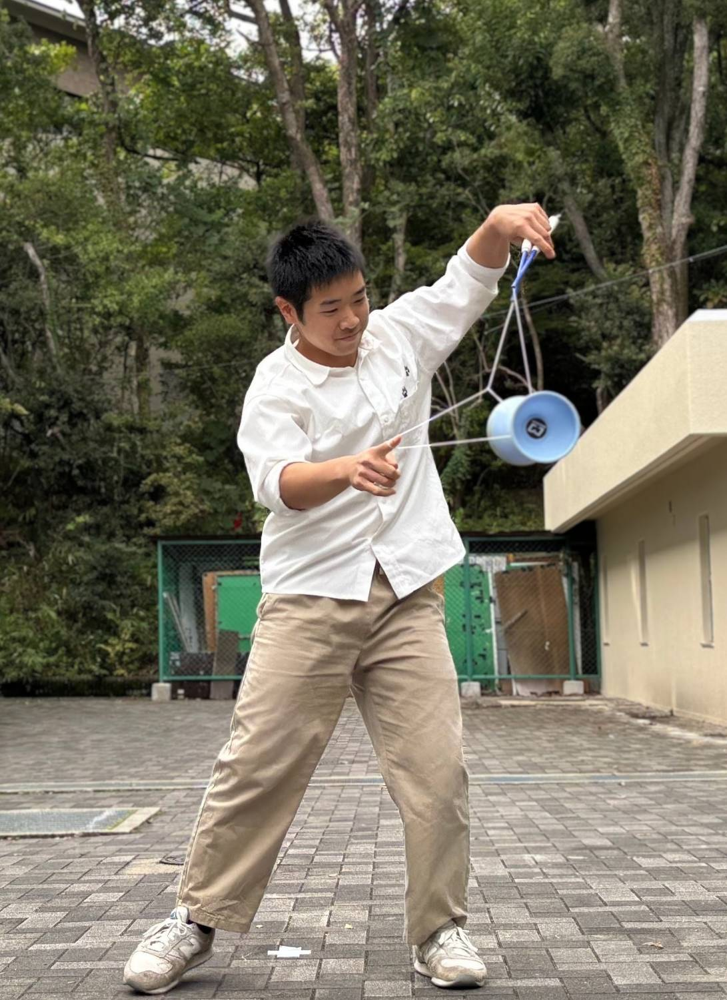
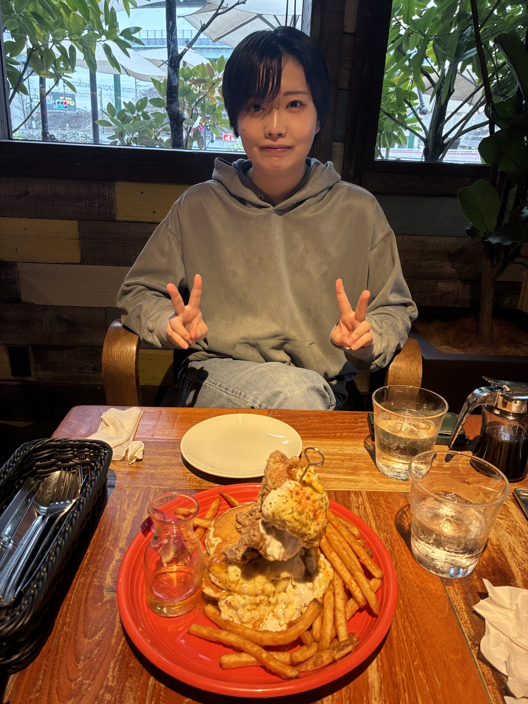
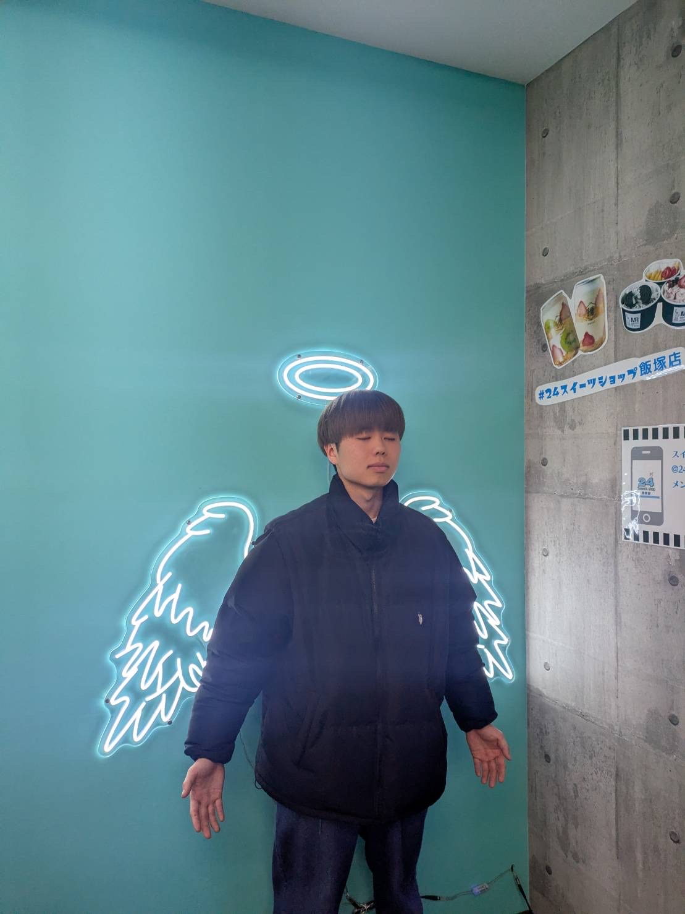
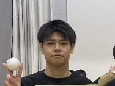
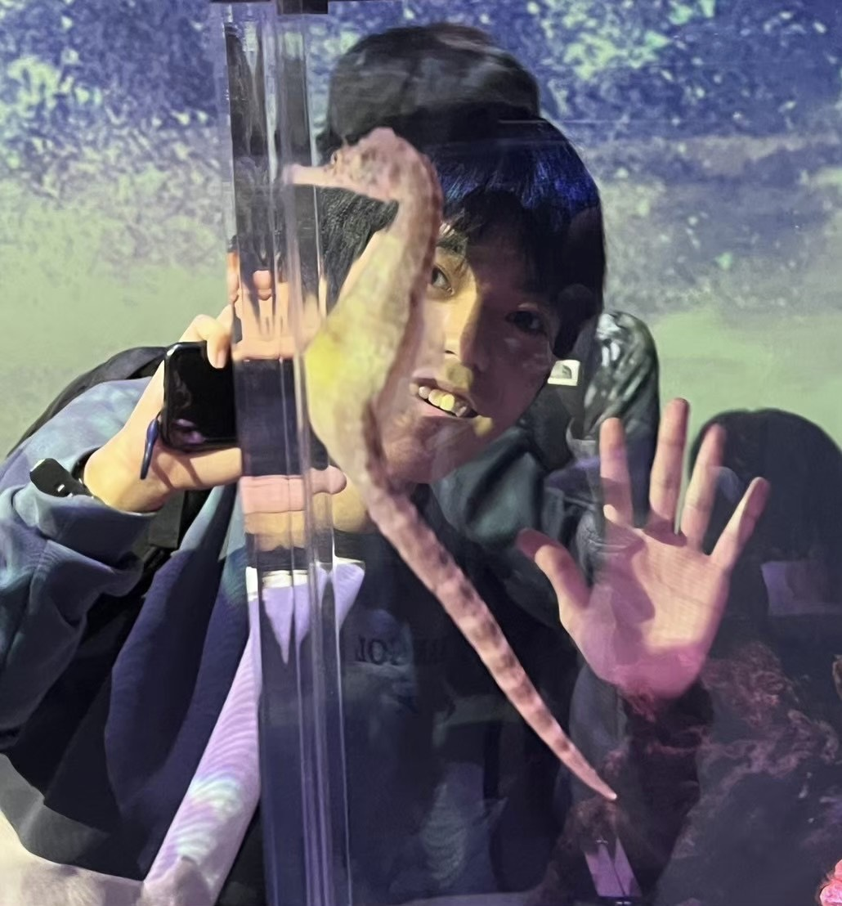
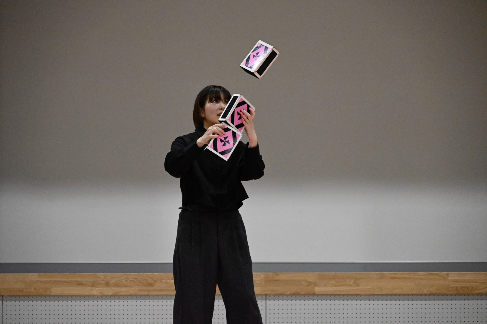
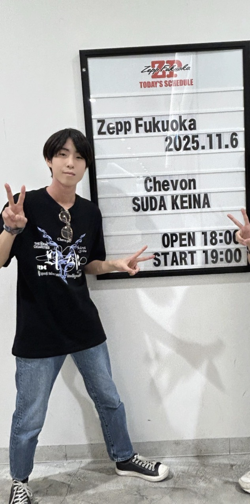

知能情報工学科(1類) 3年
部長 / Leader
どうも！部長の黒木です！！ 僕も何も知らない状態で大学からジャグリングをはじめました！ 大学で見かけたら気軽に声かけてね！！

副部長 / Sub Leader
雰囲気がいい部活です。一緒に楽しくジャグリングしよう！

新歓係
最初は全然できませんでしたが、練習を続けていく中で大会で結果を出すこともできました。 最近は大会の運営にも関わっていて、プレイヤーとしてだけでなくいろんな形でジャグリングに関われるのも楽しいと感じています。 楽しい大学生活を送りたい方、是非一緒にジャグリングをしましょう！！

情報通信工学科(1類) 4年
編入生
入部の決め手は、ジャグリングできたらチヤホヤされると思ったからです

情報通信工学科(1類) 2年
部室は基本的にいつでも開いているので、空きコマやバイトまでの隙間時間にふらっと立ち寄れるのが魅力です。 部内の雰囲気も明るく、初心者でも自分のペースで楽しくジャグリングを始められます！ とりあえずで入ってみたら、ジャグリングに夢中になった。なんて人もたくさんいます。 サークル選びで迷っているなら、ぜひ一度遊びに来てください！

知的システム工学科(2類) 2年
純粋に楽しそう！やりたい！と思って入部しました。 大学から新しいことを始めたいとか夢中になれるものを見つけたいと思う人にはぜひ入ってほしいです！ 一緒に大学生活楽しみましょう！

僕は大喜利が強いです。本当です。 入部して確かめてください。